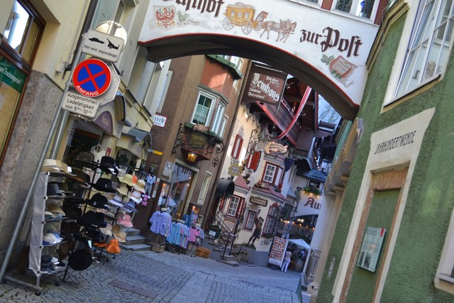

3度めのザルツブルク。
マリア・テレジア銀貨のマリア・テレジアが愛したチロルの街。2月のインスブルックは冷たく雪が舞っていた。
夏には花々が咲き誇る牧草地は白い世界に包まれていた。
4度目のレルモース。この場所はぼくの原風景のひとつになっている。 この日はオーバーストドルフのあたりを散歩していたのだが、 晩秋の空が美しく晴れ上がり、こいつは夕焼けが見れるかもしれないと思い、 ミュンヘンへの帰り道を大きく迂回して夕刻この場所を訪れた。
ツークシュピッツェに日が暮れていく。 光の稜線がオレンジ色から茜色へと色を変えながら、麓から山頂へとゆっくり昇っていく。 光が薄くなり、残されたかすかな色を複雑に変えながら闇へと溶け込んでいく。 こんなにゆっくりと日暮れを眺めたのはいつぶりだろうか。
3月初旬。雪の残るクラインヴァルザータールを訪れた。 半年前の紅葉の風景は雪に完全に閉ざされていた。 教会の中には誰もいない。 どこまでも透き通る静けさのなかで、教会の屋根の氷柱から滴る水音だけが響く。
観光ガイドにはまず間違いなく載っていないだろう。 オーバーストドルフの街から路線バスで30分ほど登った渓谷一帯をクラインヴァルザータールと呼ぶ。 この一帯はオーストリアなのだが、オーストリア側はアルプスに閉ざされていてドイツ側からしか辿り着けない。 物理的にはオーストリアと単連結な領域になっているが論理的には飛び地になっている、そんな場所だ。
ここに何があるかといえばとくに何もない。 ただ美しいアルゴイ地方の牧歌的な風景が広がっているのだ。 牧草地、カウベルの音、村教会、アルプスの雪山・・・アルゴイの景色は美しい。 ドイツ人には保養地として知られているようだ。
Hirscheggという集落の村教会。 壮麗なロココ教会もいいが、村教会には静かな美しさがある。
クラインヴァルザータールの一番奥、突き当たりにBaadという集落がある。 この先は行き止まり。アルプスに閉ざされている。
3回めのLermoos。1回めが秋、2回めが春、3回めは真夏。 真夏にはアルプスの花々が牧草地に咲き誇る。 真っ青な空には入道雲が浮かび、深い緑に色づいた牧草地、赤茶色の家々の屋根。コントラストが美しい。
ドイツとの国境に接するオーストリア・チロル州の街。 高台に聳えるクーフシュタイン城塞がランドマークだが、 お金を払わないと山の上まで登れなかったり（なので登らなかった）、 歴史地区の街並みもそれほど保存されていないなど、街としてはややいまひとつ。

光が降り注ぐ教会はいつだって美しい。
半年前の黄葉の季節のレルモースが美しかったので新緑の季節にもう一度訪れた。 この場所はぼくの原風景のひとつになっている。
牧草地からツークシュピッツェ山を丸ごと見渡す。この日はミクロ経済学の本を読んだ。
1時間に1本、ディーゼル車が汽笛を鳴らしながら山の麓をゆっくり走っていく。 どこまでものどかな風景だ。
レルモースのいくつか隣の駅、Heiterwang-Planseeで降りてみた。 降りた客はぼくしかいない、そんな場所だ。 牧草地とドイツ・アルプスの山々が美しい。 バイエルンチケットで行けてしまうが、ここはオーストリアだ。
ふと立ち寄った村教会。 小さいながら、ロココ様式に装飾された祭壇が立ち、太陽の光が優しく降り注いでいる。 村の人が活けた鮮やかな花々が、この小さな教会が村の生活に溶け込んでいることを示している。 誰もいない、何の音もしない、光だけが降り注ぐ村の教会。この教会の風景を何度も思い出す。
ガルミッシュ・パルテンキルヒェンから、 ツークシュピッツェ山を後ろ側に回り込んだところにレルモースという小さな集落がある。 ここはオーストリアだ。 ここの駅で降りて牧草地の小高い丘を駆け上がると、ツークシュピッツェ山が丸ごと見渡せる場所がある。 これまで南ドイツのいろんな場所を歩いてきていちばん気に入った景色かもしれない。
この場所はたまたま見つけた。 ガルミッシュ・パルテンキルヒェンからロイテ・イン・チロルに向かう路線はアルプスの絶景路線として知られるが、 どこか適当な駅で降りてアルプスを眺めようと思ってなんとなく降りた駅がここだった。

牧草地に寝っ転がって、ツークシュピッツェ山を丸ごと見渡す。
ガルミッシュ・パルテンキルヒェンからロイテ・イン・チロルまでの路線は、 バイエルンアルプスの雪山と牧草地を縫って走る絶景路線になっている。
小さな街でそんなに見るところはなかったように思う。 この地方の人たちは冬に暖を取るために使うのだろう、スーパーで薪がたくさん積まれて売られていたのが印象的だった。
2度めのザルツブルク。雪の溶けきらない2月末に訪れた。寒さはまだ厳しい。
メンヒスベルクの丘から眺めるザルツブルク旧市街とホーエンザルツブルク城。
ザルツァッハ川の雪解け水に太陽の光がきらきらと反射する。
バイエルン州と接するオーストリアの都市、ザルツブルク。 ミュンヘンオフィスにはザルツブルク在住の同僚が何人かいる。 ザルツブルクからミュンヘンまでは特急を使えば1時間半程度なので、 彼らは月曜の朝にミュンヘンにやってきて、木曜の夜にザルツブルクに帰り、 金曜は work from home して、金土日をザルツブルクで過ごしている。
ザルツブルクはグレーがかった白い壁の家々が立ち並ぶ美しい街だ。 国が違うせいか、バイエルン州とは少し趣が異なる。 旧市街は世界遺産に登録されており、 ゲトライデ通りに立ち並ぶお店のアンティークな看板がとても可愛らしい。
メッキ細工のお店。
モーツァルトの生家。1階はスーパーになっている。
メンヒスベルクという丘に登って眺めたザルツブルクの街並み。 訪れたのは4月半ばだったがどんよりとした雪空から雪がはらはら舞っていた。